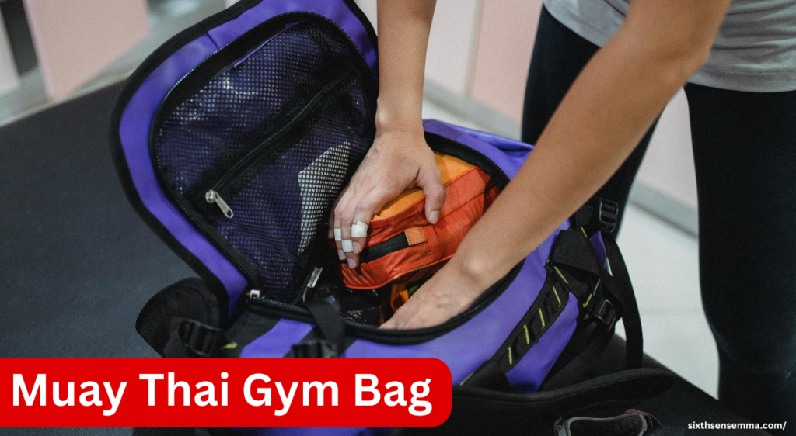
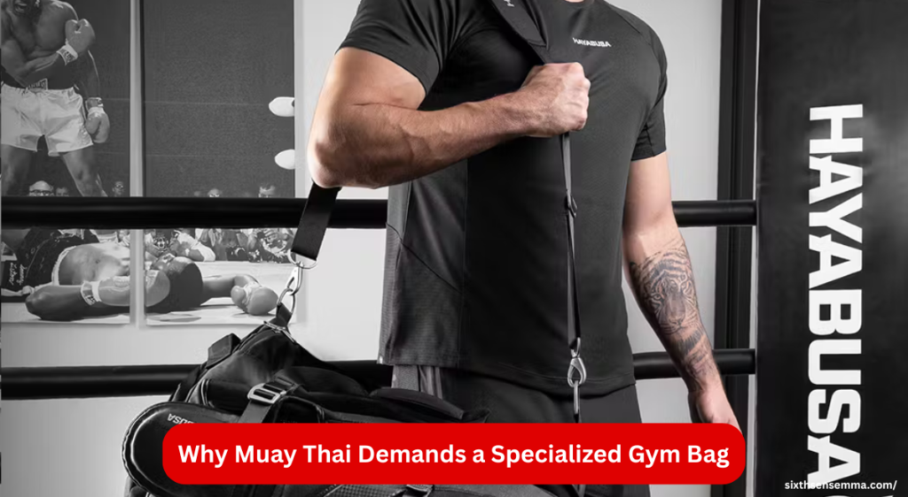

Best Muay Thai Gym Bag for Tough & Long Training

Muay Thai gym bag is something every fighter needs for training. When you go to the gym every day and train hard, you need a strong and roomy bag to carry all your gear like gloves, wraps, shin guards, and clothes. A good gym bag helps you stay organized and keeps your clean and dirty items separate. In this guide, we’ll help you find the best Muay Thai gym bag that can handle long and tough training sessions with ease.
Importance of a Reliable Gym Bag for Muay Thai
When I first began my Muay Thai journey, I made the mistake of using a too-small bag that couldn’t handle my daily training needs. It was constantly overstuffed, the zipper torn, and I often found myself digging through a mess of wraps, gloves, and other gear just to find my fresh clothes. That kind of disorganized setup not only slowed down my routine but also left me frustrated when my bag eventually fails right before a session.
A quality gym bag is more than just storage it’s your partner in discipline. When your bag can’t carry the essentials, or worse, feels flimsy under pressure, it takes away from your focus. I learned that investing in a reliable, purpose-built bag keeps everything in place, protects your items, and gives you peace of mind before every session. A good gym bag doesn’t just carry gear it supports your entire training mindset.
What to Expect from This Guide
This guide is built from real gym experience and will walk you through everything you need to know when choosing and using a Muay Thai gym bag. We’ll cover smart packing tips to keep your gear, gloves, wraps, and clothes organized in separate compartments. You’ll learn how the right design with proper pockets and ventilation can make a big difference, especially when dealing with sweat and moisture after an intense training session.
We’ll also explore what kind of durability to look for, how to handle regular maintenance, and how to avoid common issues that shorten a gym bag’s lifespan. Whether you’re just starting out or already deep in the sport, this guide will help you stay ready, focused, and well-equipped to face every training day without fuss.
How the Right Bag Enhances Your Training
Back when I trained with a regular duffel bag, I didn’t realize how much it was holding me back. My gloves would stay damp, my wraps began to rot, and the smell clung to every part of my gear. Everything changed once I switched to a ventilated bag. It kept things dry, reduced stress, and gave me the convenience to focus purely on the work ahead. A tough bag with a strong strap and easy snaps made all the difference no more digging around or finding my stuff soaked at the bottom.
Having an organized bag means better gear prep, which means you can train harder without distractions. A bag that looks sharp and holds up to everyday use gives you confidence too. It’s not just about storage it’s about mindset. When your gear’s ready and your bag keeps up, so do you.
Why Muay Thai Demands a Specialized Gym Bag
Muay Thai is a brutally intense, sweaty, and gear-heavy sport. Between gloves, shin guards, wraps, and fresh clothes, you’re hauling more than what a regular gym bag can handle. It’s not about making a fancy upgrade it’s a necessity. A basic bag just falls short when it comes to holding everything properly and keeping it organized through constant, punishing training sessions.

A Muay Thai gym bag is built to carry it all without collapsing under pressure. It’s specialized for the sport stronger zippers, better compartments, and designs made for sweaty, heavy gym days. If you train seriously, you need a serious bag that matches your effort. Anything less just won’t cut it.
Unique Needs of Muay Thai Training Gear
Every Muay Thai session leaves you drenched in sweat, with soaked gloves, damp wraps, and dripping shin guards that need to be properly stored to avoid stink. Unlike other sports, Muay Thai demands multiple sets of gear from 16oz gloves, hand wraps, and ankle supports to elbow pads, pads, and a mouthguard all of which must be packed with care. A small bag just doesn’t cut it when your training routine means carrying a towel, water bottle, and a full change of clothes every time.
The gear is bulky, the equipment is many, and space is always tight. I’ve seen fighters lose essential items just because everything was packed tight without any system. A proper bag keeps things from getting lost, separates sweaty gear from fresh items, and makes every training day feel more organized. When your equipment is neatly stored and easy to reach, your mind stays focused and that’s crucial in a sport like Muay Thai.
Limitations of Regular Gym Bags
I used regular gym bags when I first started training several times a week, thinking they’d do the job. But over time, I saw the flaws. The lighter material just couldn’t take the beating straps rip, stitching weakens, and the whole thing wears down fast. Zippers break, pockets get stuffed, and everything inside ends up squished, tangled, or even lost. My wraps, gloves, and sweaty gear were always mixed up, and my bag constantly smells bad from poor airflow.
These bags simply don’t have the compartments or durability to hold a full Muay Thai kit. When dragged in and out of the gym, they look worn and loose. Worse, there’s nowhere for your items to breathe, especially when your training leaves everything drenched. Eventually, sweat seeps outside the bag, and if you’re unlucky, you’ll end up with a mess that’s impossible to clean. A regular bag just isn’t made for Muay Thai’s pace or its punishment.
Features for a Muay Thai Gym Bag
A – Aesthetics
- Implied through “design” – when it says “the design must be built to endure the force of daily training”, it speaks to functional design, which includes visual cues of durability (aesthetic toughness).
G – Gear Protection
- Directly addressed: Reinforced stitching, strong zippers, and heavy-duty fabric all protect your gear from falling out or getting damaged.
- Special compartments that separate wet from dry clothes prevent gear from getting soaked or degraded.
S – Smell Control
- Clearly covered: Ventilation, mesh panels, and separation of wet and clean gear all help reduce odor and bacterial growth.
R – Room/Storage
Directly mentioned: “Room inside should be enough for everything else you carry.” This confirms it’s designed with storage space in mind.
Materials That Withstand Every Round
A real Muay Thai gym bag isn’t just for looks it needs to hold up over time through daily training and abuse. You’re constantly tossing it in the car, dragging it across the floor, and stuffing it with damp gloves, sweaty pads, and all your other gear. That’s why only tough materials will do. Anything less wears out quick and ends up costing more in the long run.
The bag you carry should be built to take a proper beating, not just sit pretty in the corner. The right materials are resistant to tears, moisture, and daily rough handling. When you’ve trained long enough, you stop compromising you choose gear that’s made to last, just like your discipline.
Best Fabrics for Durability
When it comes to Muay Thai bags, not all fabrics are created equal. Sure, cotton may feel soft, but it won’t last under the stress and sweat of an intense routine. For those of us who train hard and need our bags to survive rough handling, heavy-duty materials like Cordura and ballistic nylon are game changers. These fabrics are resistant to tears, scuffs, and abrasions, originally designed for military and outdoor gear, and they handle pressure like a champ.
Even polyester bags can be a solid pick when engineered right lightweight, water-resistant, and built to carry the weight of serious gear. As an athlete, you want something that moves with you, not something that falls apart. A tough fabric gives your Muay Thai bag the backbone it needs to stay reliable, no matter how intense your sessions get.
Importance of Reinforced Stitching and Hardware
A strong Muay Thai gym bag depends just as much on its fabric as on its stitching and hardware. Weak seams and cheap zippers are the first to break under the weight and constant stress of a fully packed bag. That’s why reinforced seams, with double stitching or even triple stitching at key stress points, are essential to keep the body of the bag from falling apart.
Good bags use metal zippers or industrial-grade plastic that won’t easily snag or split like thin, low-quality ones. Strong straps and tough hardware hold everything together, even when the bag is stuffed to the brim with gear. This attention to detail is what makes a bag reliable and able to survive your toughest training days.
Longevity and Protection Against Wear and Tear
In Muay Thai training, your gym bag is a daily training companion that faces constant abuse. A flimsy bag won’t last, but a tough, well-built bag can hold up for years. The right material acts as a strong barrier between your gear and the outside world, shielding your equipment from rain, dirt, and the messy gym floor.
Keeping your gloves and pads safer and cleaner means they stay in better shape longer, saving you money and hassle. A durable bag isn’t just a container it’s protection for the tools that help you train harder every day.
Built for Every Workout: Functional Design
When you use your Muay Thai gym bag a lot, things like the strap or zipper can get damaged or the fabric can tear. If you fix these small problems early, like sewing with a needle and thread, your bag will last much longer.
If the damage is big, you can take it to a tailor or a gear shop to get it fixed properly. Fixing your bag on time helps keep it strong for every workout and stops you from needing to buy a new one soon.
Smart Compartmentalization
A smart gym bag makes it easy to find what you need without digging through a mess. Separate pockets and sections keep your sweaty clothes away from clean stuff, so nothing gets mixed up or ruined. Special waterproof compartments are perfect for wet items or anything leaking, like damp gloves or soaked shoes.
Keeping everything organized not only protects your gear but also makes your life easier. No more fumbling around for dirty clothes or risking your clean items getting ruined just grab what you need and go.
Versatile Carry Options
Carrying your Muay Thai gear should fit your routine and distance. A smart gym bag offers multiple carry styles backpack straps let you go hands-free with even weight distribution on your back, perfect for longer walks or commutes. When you’re in a hurry, duffel-style handles provide a quick grab-and-go option.
With shoulder straps as well, you get maximum convenience and flexibility. Having different options means you can carry your bag comfortably no matter where you’re headed or how much gear you pack.
Packing Smart: What Goes Inside
For every training session, pack your bag with the important gear like boxing gloves, hand wraps, shin guards, and a mouthguard. These are needed for pad work, sparring, and conditioning to keep you safe and ready.
Also, bring a towel and water bottle to stay fresh and hydrated. Don’t forget a change of clothes for after your workout and a small first aid kit for any minor injuries during training. This way, you are always prepared.
Must-Have Muay Thai Gear
For every training session, your bag should be packed with the basics that keep you ready to perform. Boxing gloves, hand wraps, shin guards, and a mouthguard are essential for pad work, sparring, and conditioning. Don’t forget ankle supports for extra protection during intense moves.
A towel and water bottle help you stay fresh and hydrated, while a change of clothes keeps you comfortable after a sweaty workout. Including a small first aid kit is smart too it’s better to be prepared when training gets tough.
Tips for Organized Packing
To save time and avoid digging through your bag, use compartments for specific items. Keep your wraps in a small pocket so they’re easy to grab. Store your gloves in a ventilated section to help them dry out between sessions.
For wet clothes, a waterproof area inside the bag prevents moisture from spreading to other gear. Packing this way keeps everything organized and ready for your next training without the hassle.
Balancing Weight for Comfort
Carrying heavy gear all on one side can make your bag sag and feel awkwardly unbalanced, causing your shoulders to wear out faster. To avoid this, spread your gear evenly inside the bag. Place the heaviest items, like gloves and shin guards, at the bottom and closer to your back when using backpack straps.
Keeping the load balanced and lighter on both sides helps prevent strain and makes carrying your Muay Thai bag more comfortable, especially during long walks or commutes.
Also Read: Best Martial Arts for Self-Defense: Which Style Suits You?
Care & Maintenance Tips
After every training session, always open your bag to let your sweaty gear air dry. This stops bad smells and keeps your equipment from getting damaged by trapped moisture. Use a damp cloth to gently wipe the inside of the bag to remove sweat marks and dirt.
Good ventilation helps with drying and moisture control, which prevents odor and keeps your gear clean and fresh for your next workout.
Daily Care Routine
After every training session, it’s important to open your bag right away to let sweaty gear air dry and prevent bad smells. Leaving the equipment sealed inside traps moisture, which causes odor and damages your gear over time. Use a damp cloth to gently wipe the inside of the bag to remove any sweat marks or dirt.
Good ventilation and drying are key for moisture control and cleaning. Taking these simple steps daily helps extend the life of your Muay Thai bag and keeps your gear fresh for every workout.
Deep Cleaning and Odor Control
Every few weeks, your bag needs a deeper clean to stay fresh. If it’s machine-washable, follow the tag’s instructions carefully to avoid damage. For bags that can’t go in the washer, hand clean using warm water and gentle soap.
To fight stubborn smells, spray your bag with a natural deodorizer like a water-vinegar mix. This helps kill bacteria and keeps your gear smelling fresh between training sessions.
Repair and Maintenance for Longevity
A strong bag lasts longer when you catch problems early. If a strap starts to rip, a zipper seems about to break, or you spot a loose thread or torn fabric, don’t wait fix it with a quick small repair. Sometimes, a simple needle and thread can save your bag from wearing out.
For bigger damage, visiting a tailor or gear shop can help handle issues professionally. Taking care of repairs early means your Muay Thai bag stays reliable through every workout.
Tested by Fighters: Performance in Action
Real fighters know that a Muay Thai gym bag must handle tough training days without failing. After carrying heavy gear like gloves, pads, and wraps through sweaty, intense sessions, these bags still hold up strong.
The durability and smart design make packing and organizing easy, so fighters can focus on their workout, not their bag. From quick trips to the gym to long training days, these bags perform exactly as promised, standing up to the daily grind with no issues.
Real User Testimonials
Many Muay Thai fighters say a well-made bag has completely changed their routine. They love having a special spot for gear like wraps, gloves, and sweaty clothes, making packing and unpacking much faster and easier.
Switching from a regular backpack to a Muay Thai-specific bag made a big difference. Fighters no longer deal with crushed gloves or forget important equipment. The ventilated bags also help stop their gear from smelling awful, keeping everything fresh for every training session.
Bag Performance in Different Environments
A good bag must perform well in many settings whether at the gym, outdoors, or during travel. It should fit easily in tight lockers, corners, or a car trunk without causing hassle.
Strong features like water-resistant bottoms and tough zippers help it handle dirt, rain, and rough surfaces during beach training or park drills. Compact enough for gym-hopping or fight camps, it keeps all your gear safe and dry, no matter the conditions.
| Feature | Why It Matters | Typical Spec |
|---|---|---|
| Volume | Holds all gear comfortably | 35–45 L |
| Material | Ensures longevity | Cordura 600D |
| Weight | Light to carry even when full | ~1.2 kg |
| Compartments | Organization boosts efficiency | 5–7 zones (gloves, gear) |
| Carry Modes | Flexibility across routines | Duffel/backpack/strap |
Contact Us | Sixth Sense MMA
“We’re here to help you get started with your Muay Thai Gym Bag. If you have questions about training, timing, or want to stop by and see us, our team is always ready to guide you.”
Customer reviews
Ali R. (Canada)
“I joined Sixth Sense MMA while visiting family in USA. The training was tough but professional. Easily one of the best gym experiences I’ve had.”
Maya S. (USA)
“The trainers were super helpful and really knew their stuff. Even as a beginner, I felt welcomed and supported every step of the way.”
Tariq K. (UAE)
“I’ve trained at many gyms, but this one stands out. Great energy, solid Muay Thai technique, and a real family vibe.”
Conclusion
Choosing the right Muay Thai Gym Bag can make your training easier and more organized. It keeps your gloves, wraps, towel, and other gear in one place — ready for any tough session. At Sixth Sense MMA, we help fighters pick bags that are strong, comfortable, and made for real training life.
If you’re serious about your Muay Thai journey, the right gym bag is your first step. Let us help you carry your passion with pride.
FAQ’s
Muay Thai involves sweaty, bulky gear like gloves, shin guards, and wraps that require organized, ventilated storage. A specialized gym bag provides the compartments, durability, and smell control that regular bags simply can’t handle.
Regular gym bags lack proper ventilation and structure, leading to damp, smelly gear and disorganization. Over time, they wear out quickly, and you may struggle to find your items or keep your clean gear separate from sweaty equipment.
A capacity of 35–45 liters is ideal to carry gloves, shin guards, towel, water bottle, clothes, and accessories without overstuffing. This volume handles most training setups comfortably.
Yes. A good gym bag keeps you organized, saves time, prevents forgotten gear, and improves hygiene. It lets you focus on training—not gear problems.
Ventilation panels or mesh zones help air out sweaty gear, reducing moisture and odor buildup. This protects your equipment from bacteria, rot, and foul smells.
Top materials include Cordura 600D, ballistic nylon, and reinforced polyester. These fabrics resist wear, tear, and moisture, standing up to constant use.
Always open the bag after training to let air in. Use separate ventilated compartments, and clean the interior regularly with a damp cloth or mild disinfectant. Deep clean every few weeks.
Yes. Keep heavier items like gloves and pads near the bottom and close to your back if using backpack straps. This balances the weight and prevents strain on your shoulders.
Train with us in Coppell
The first class is free. Shorts, a t-shirt and a water bottle. We lend the rest.
Book a free class